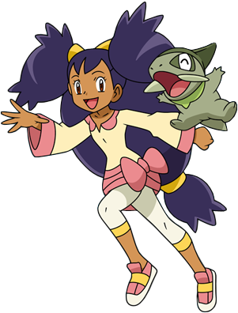

About the Unova region
The Unova region is the fifth region that Ash Ketchum explores in his journey to become a Pokemon Master. The games Pokemon Black and White added 156 more Pokemon which can now be found and caught. Sequels were released two years later for Black and White titled "Black Version 2" and "White Version 2". All 4 games are considered part of "Generation 5".
The Unova region is the first region to be set outside of Japan. Unova would be based off New York City, America.
There are 3 seasons which take place in Unova: Black and White, Rival Destinies, and Adventures in Unova and Beyond. Adventures in Unova and Beyond also takes place on the Decolore Islands, which are an archipelago connecting Unova to Kanto.
Ash's journey thus far
Once Ash returns to Kanto at the end of his Sinnoh adventures, he doesn't stick around for long! He joins Professor Oak on a flight to the brand new Unova region where he makes the decision to participate in the Unova league. With a new change of clothes, and after meeting with the professor of the region, Professor Juniper, Ash sets off to explore the new areas of the Unova region!
Along the way, Ash encounters new faces such as Iris and Cilan, who join him in his journey to explore the Unova region! However, his journey is not without peril when he encounters his newest rival, Trip, a new trainer who doesn't think highly of the Kanto region. Ash would also encounter the villains of the region, Team Plasma, who aim to liberate all Pokemon from their trainers. Team Rocket also aims to set up base in Unova, and play a more serious role in the Unova region than past regions.
Once the day for the Unova league arrives, Ash only manages to reach the Top 8 and his goals are dashed. But that doesn't discouraged Ash from his dream to become a Pokemon master! On his way back to the Kanto region, Ash and his friends take a trip through the Decolore Islands. Along the way, Ash meets Alexa, a journalist from the Kalos region, and decides that once he returns to Kanto, he'll set off to new opportunities and adventures in the Kalos region!
The characters
Throughout Unova, Ash has met friends and foes alike. Use the menu to be sent to a specific character or keep scrolling to read them all.
Please note that this is not an extensive list of characters which appear in Unova. Only prominent characters have been featured in this list. The full list of characters can be found on the wiki.
The list will also not feature any cameos from past regions, only characters new to Ash's journey.
Professor Juniper
Professor Juniper specialises in the origin of Pokemon and is the professor of the Unova region. Such is the case with Pokemon professors, they start out a new trainer's journey by giving them their first Pokemon and a Pokedex.
Professor Juniper's lab is in Nuvema Town, and where all trainers begin their journey from. In a peculiar case, Professor Juniper helped out Ash when it was found that Pikachu's electricity was taken from him by a myseterious Pokemon. This put Ash in a servere disadvantage against his first battle against Trip. Pikachu's electricity was later returned in an electric storm.
Iris
Iris is one of Ash's travelling companion in the Unova region who is striving to become a master of dragon type Pokemon. They first encounter each other when Ash thought he scanned a Pokemon on his Pokedex, only for it to register as Iris' Axew. For a short while, Iris would follow Ash as he begun his journey, not fully trusting him. Once Ash and Cilan invites Iris to join them in their journey, she accepts and formally follows Ash in his journey.
Due to Iris' history of not adapting well to cities, she only made friends with other Pokemon. She begun her journey when it was requested she journey from her hometown of the Village of Dragons with a newly born Axew.
Once the trio arrived in the Kanto region after their travels through the Docolore Islands, Iris and Cilan decides to journey to the Johto region. Which from there, they went off on their separate ways.

Cilan
Cilan is one of the leaders of the Striaton Gym, a Pokemon Connoisseur, and knowledgeable about all things Pokemon. He joins Ash in his journey after being defeated in their battle together, leaving the gym to be run by his two other brothers, Chili and Cress. Cilan also specialises in grass type Pokemon.
Throughout the trio's travels, Cilan has been extremely handy in multiple situations, with a multitude of skills such as cooking, fishing, and other interests.
Upon arrival in the Kanto region, Cilan and Iris parts ways with Ash as they travel onto the Johto region. From there, Cilan and Iris parts ways themselves to explore different parts of Johto.
Trip
Trip is Ash's largest rival in the Unova region. After their first unfortunate meeting where Ash was at an extreme disadvantage and told to "return to basics", the two don't always see eye to eye due to Trip's view on the Kanto region. However, although Trip acts like he doesn't care about those who come from Kanto, he has been found helping Ash and his friends out on multiple occasions, and being quite attentive during battles.
By the time it was Ash and Trip's final battle against each other, Trip had developed an interest in battling Ash at his best. At the end of it, Trip lost and was eliminated from the Unova league. From there, he continued on his Pokemon journey.

Georgia
Georgia is not one of Ash's rivals but instead a rival of Iris. Georgia calls herself the "Dragon Buster" and aims to defeat every dragon type specialist. As Iris aims to become a dragon master, the two characters created a natural rivalry.
Although Georgia and Iris battle each other multiple times, on certain occasions, Georgia could be found blaming something else for her loss, and could be outright rude. Even though she sought out to defeat all dragon type specialists, Georgia eventually gained some respect for Iris and encouraged her to become a better dragon type trainer.
Burgundy
Burgundy is also not one of Ash's rivals however, one of Cilan's instead. She is Cilan's self proclaimed rival due to Cilan's previous evaluations of Burgundy's pokemon in the past. Due to this, Burgundy sought out to become a Pokemon Connoiseur in order to be able to beat Cilan in a battle.
Although Burgundy can be seen as extremely direct and sometimes misinformative, she does aim to become a better Pokemon Connoiseur and pays attention to Cilan during evaluation, although she does not take to criticism lightly.

Plasma's N
N (or full name "Natural Harmonia Gropius") is a unique trainer with the ability to understand and speak with Pokemon. Team Plasma used N as their puppet while undertaking their nefarious tasks.
Along with Ash and his friends, and Looker, they successfully prevent Ghetsis from forcing control over the legendary Pokemon, Reshiram. N goes on his own way after that final confrontation.
Team Plasma
Team Plasma are the villains of the Unova region. They aim to free all pokemon from their trainers either by convincing them to release their Pokemon, or by force.
Ghetsis is the leader of Team Plasma and is often seen frustrated to accomplish his goals. Due to this, destruction often followed Team Plasma in their attempt to complete their task as quickly as possible.
However, their plans are destroyed by Ash, his friends, the detective Looker, and N. Team Plasma is then captured by the international police after attempting to gain control of the legendary Pokemon, Reshiram.